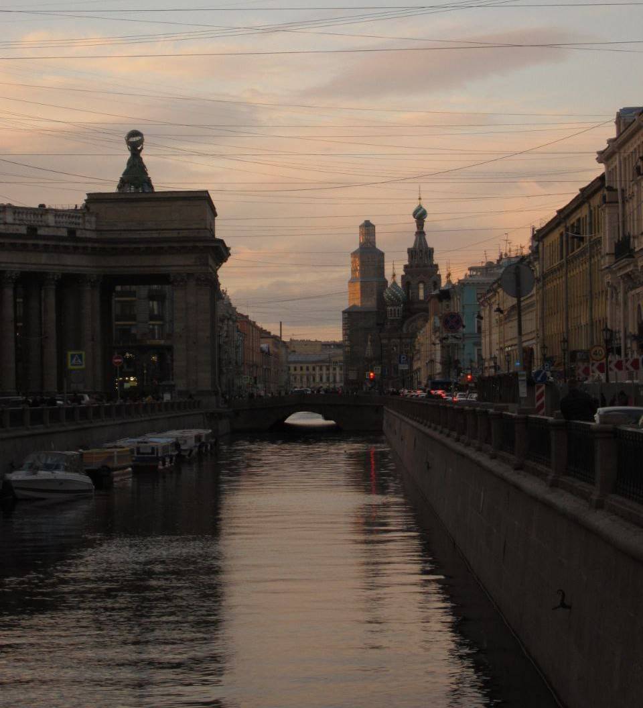

Pancake House
Pancake House — это кафе в Санкт-Петербурге, стилизованное под американский дайнер 50-х годов . Оно специализируется на авторских панкейках и огромных овершейках.
Адрес: Литейный проспект, 40.
Режим работы: Ежедневно с 10:00 до 22:00
Контакты: +7 (921) 884-41-77

Невский проспект
Невский проспект — это главная улица Санкт-Петербурга, которая может стать идеальной декорацией для вашей фотосессии. Это настоящий "открыточный" вид города, где величественная архитектура встречается с ритмом современной жизни.
Адрес: ст. метро Невский проспект
Режим работы: Круглосуточно

Новая Голландия
Новая Голландия — рукотворный остров-парк в Петербурге, где можно сбежать от городской суеты: поваляться на газоне с книгой, посмотреть кино под открытым небом, а зимой — покататься на коньках под музыку на большом катке.
Адрес: наб. Адмиралтейского канала, д. 2
Режим работы: Eжедневно с 09:00 до 22:00 (пн–чт) и до 23:00 (пт–вс)